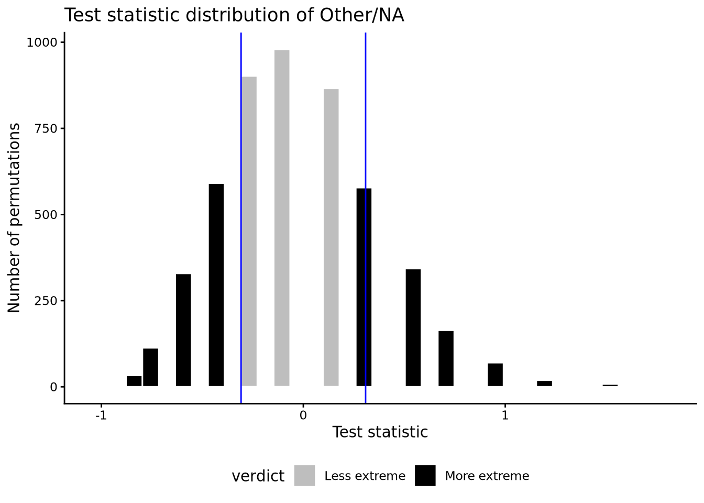
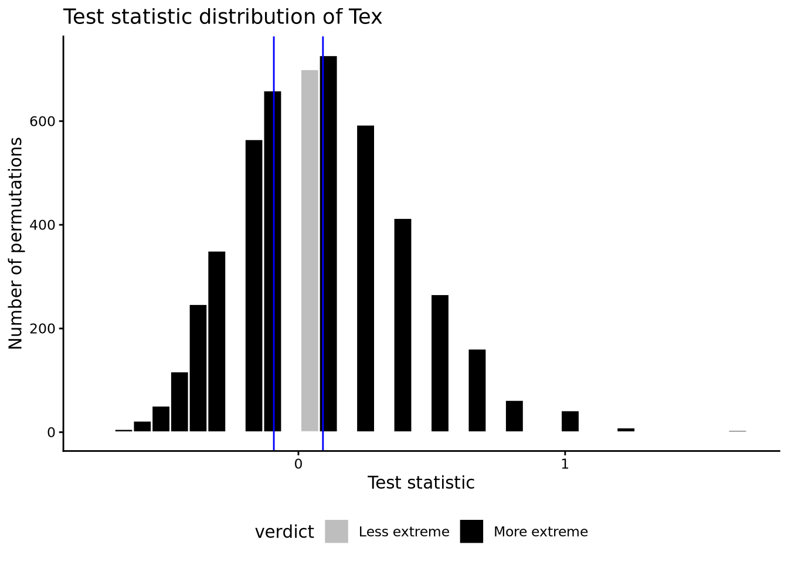
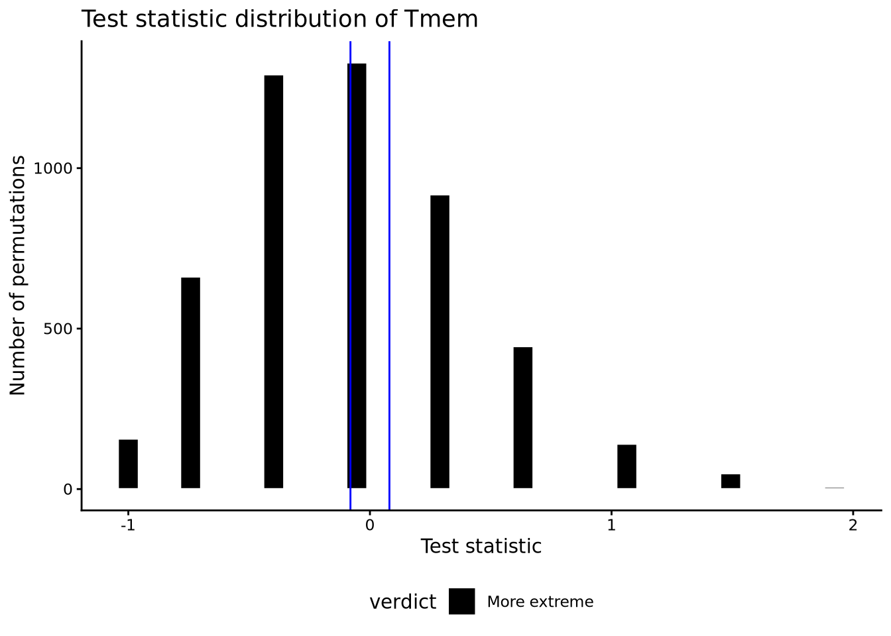

── Conflicts ────────────────────────────────────────── tidyverse_conflicts() ──
✖ dplyr::filter() masks stats::filter()
✖ dplyr::lag() masks stats::lag()
ℹ Use the conflicted package (<http://conflicted.r-lib.org/>) to force all conflicts to become errors
Hypothesis: Our null hypothesis claims that TCR_X is the same level of enrichment in the TLS compared to other TCRs The alternative hypothesis claims that TCR_Xs is differentially enriched in the TLS compared to other TCRs
Take into account the non-independent variable of puck identity by permuting sample label within the puck. e.g. say Puck30 has 10 TCR_X beads, and Puck32 has 20 TCR_X beads. After permutation, Puck30 will still have 10 TCR_X beads, and Puck32 20 TCR_X beads.
Test statistic: Enrichment = (number of beads for TCR_X in the structure/total number of beads for TCR_X across all structures)/(number of beads for all other clonotypes in the structure/ total number of beads for all other clonotypes across all structures) - 1
In other words, enrichment = (fraction of TCR_X in the TLS) / (fraction of all other clones in the TLS) - 1
Note: this logic applies to specific clonotypes, phenotypes of clones, and specificity of clones
9.5 Get phenotypes seen at a count of 5 or more across all pucks
# Remove metadata columns that other pucks don't haveP107TA_15_RNA@meta.data <- P107TA_15_RNA@meta.data %>%select(-largest_clone_id, -puck15_count, -log_puck15_count)P107TA_18_RNA@meta.data <- P107TA_18_RNA@meta.data %>%select(-largest_clone_id, -puck18_count, -log_puck18_count)P107TA_20_RNA@meta.data <- P107TA_20_RNA@meta.data %>%select(-largest_clone_id, -puck20_count, -log_puck20_count)P107TA_md <-do.call(rbind, list(P107TA_15_RNA@meta.data, P107TA_18_RNA@meta.data, P107TA_20_RNA@meta.data))# These two functions work for grabbing phenotypes too- with some changes.unique_phenotypes <-get_unique_productive_clones(P107TA_md$PrimaryCluster)# Rename PrimaryCluster to clone_id so count_clones_by_annotated_area() workstemp <- P107TA_md %>%select(PrimaryCluster, area) %>%rename("clone_id"="PrimaryCluster")P107TA_filtered_phenotypes <-count_clones_by_annotated_area(temp, unique_phenotypes) %>%group_by(clone_id) %>%summarize(sum_count =sum(count)) %>%filter(sum_count >=5) %>%pull(clone_id)length(P107TA_filtered_phenotypes)
[1] 4
9.6 Rename individual TLS and filter for beads containing TCRs
# Rename individual TLS to "TLS"P107TA_md <- P107TA_md %>%mutate(area =case_when(area %in%c("TLS1", "TLS2", "TLS3", "TLS4") ~"TLS", T ~ area)) %>%# Filter for beads with TCRsfilter(!is.na(clone_id))
9.7 Permute
# Save results in a listTLS_phenotype_results.list <-list()for(phenotype in P107TA_filtered_phenotypes){ P107TA_phenotypeX_md <- P107TA_md %>%# Select columns of interestselect(orig.ident, PrimaryCluster, barcode, area) %>%# Label phenotype_X containing beads as "interesting" and label all other beads as "other".# note: spatial-unique clonotypes will be labelled as "other" & str_detect IS case sensitive!mutate(tcr_label =case_when(str_detect(PrimaryCluster, paste0(phenotype, "($|,)")) ~"TCR_of_interest", T ~"other_tcr"),# Label the TLS as "interesting" and other areas as "other"area_label =case_when(area == given_area ~"area_of_interest", T ~"other_area"))# Find pucks in which phenotype_X is observed P107TA_phenotypeX_pucks <- P107TA_phenotypeX_md %>%filter(tcr_label =="TCR_of_interest") %>%distinct(orig.ident) %>%pull(orig.ident)# Filter for pucks where phenotype_X is observed P107TA_phenotypeX_md <- P107TA_phenotypeX_md %>%filter(orig.ident %in% P107TA_phenotypeX_pucks)# Test enrichment of phenotype_X in the TLS TLS_results <-enrichment_permutation_test(P107TA_phenotypeX_md, n_perm = n_perm, clonotype = phenotype) TLS_results$pval# Print plot only if the phenotype is significantif(TLS_results$pval <=0.05){# Plot the fraction of beads with phenotype_X in TLS vs all other phenotypes in TLS for each puck.# In other words, plot Cc/Call and Ac/Aall plot <- P107TA_phenotypeX_md %>%group_by(tcr_label, area_label, orig.ident) %>% dplyr::count() %>%pivot_wider(names_from = area_label, values_from ="n") %>%# Some values are supposed to be 0 but are NA due to dplyr::countreplace(is.na(.), 0) %>%# Calculate Call and Aallmutate(all_areas =sum(area_of_interest, other_area),# Calculate Cc/Call and Ac/Allfraction = area_of_interest/all_areas) %>%select(tcr_label, fraction, orig.ident) %>%ggplot() +geom_boxplot(aes(x = tcr_label, y = fraction, fill = tcr_label)) +geom_point(aes(x = tcr_label, y = fraction, color = orig.ident)) +ggtitle(paste0("Phenotype of interest: ", phenotype)) +ylab("Fraction in the TLS")print(plot) }# KEEP THIS ORDER, or the names of the list will be in the wrong order later TLS_phenotype_results.list <-append(TLS_phenotype_results.list, list(TLS_results))}
`summarise()` has grouped output by 'orig.ident'. You can override using the
`.groups` argument.

`summarise()` has grouped output by 'orig.ident'. You can override using the
`.groups` argument.

`summarise()` has grouped output by 'orig.ident'. You can override using the
`.groups` argument.

`summarise()` has grouped output by 'orig.ident'. You can override using the
`.groups` argument.